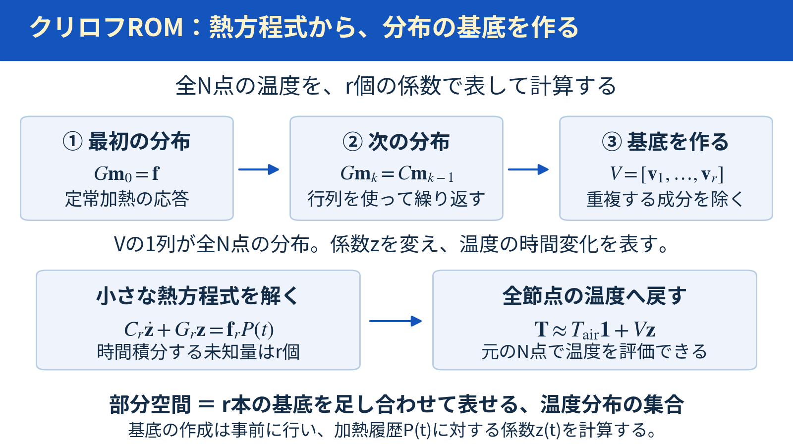
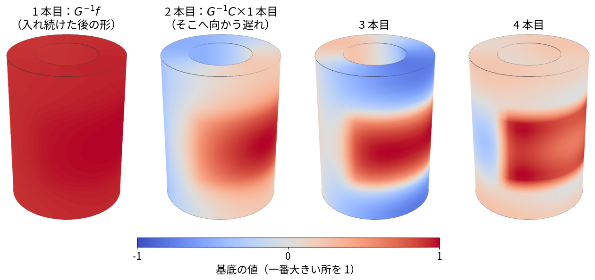
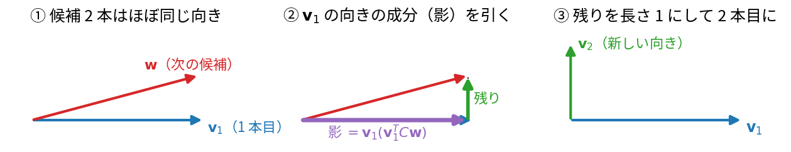
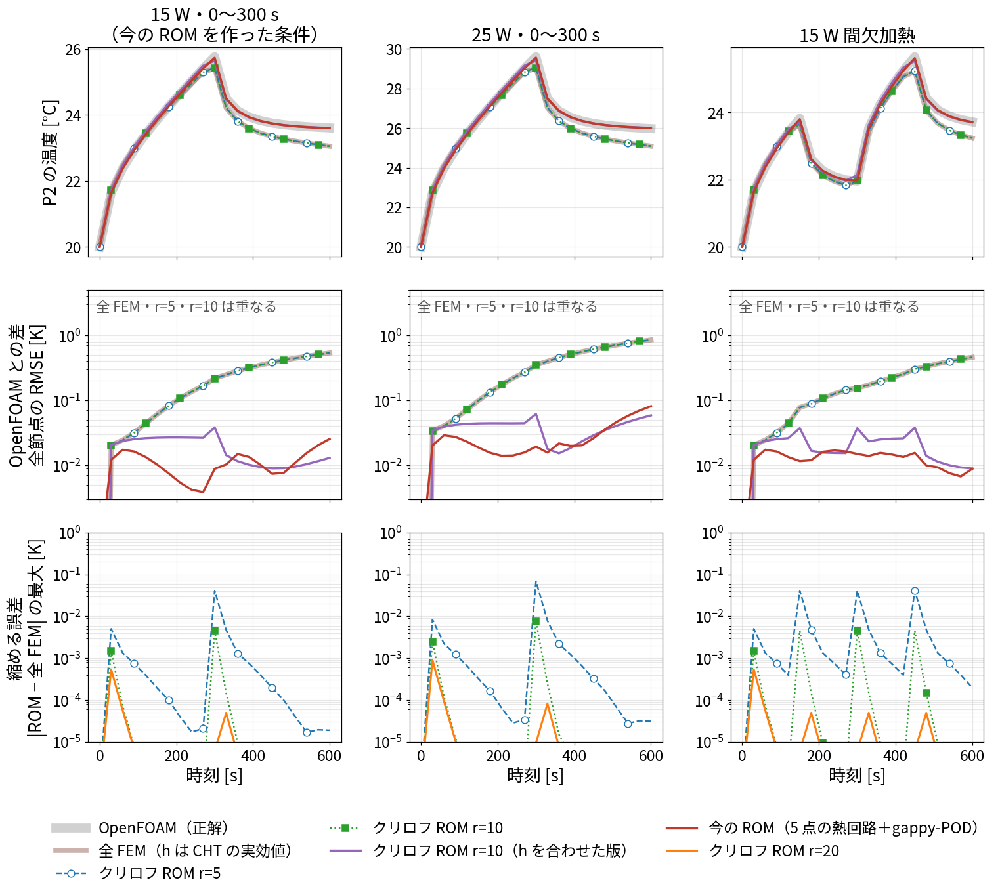
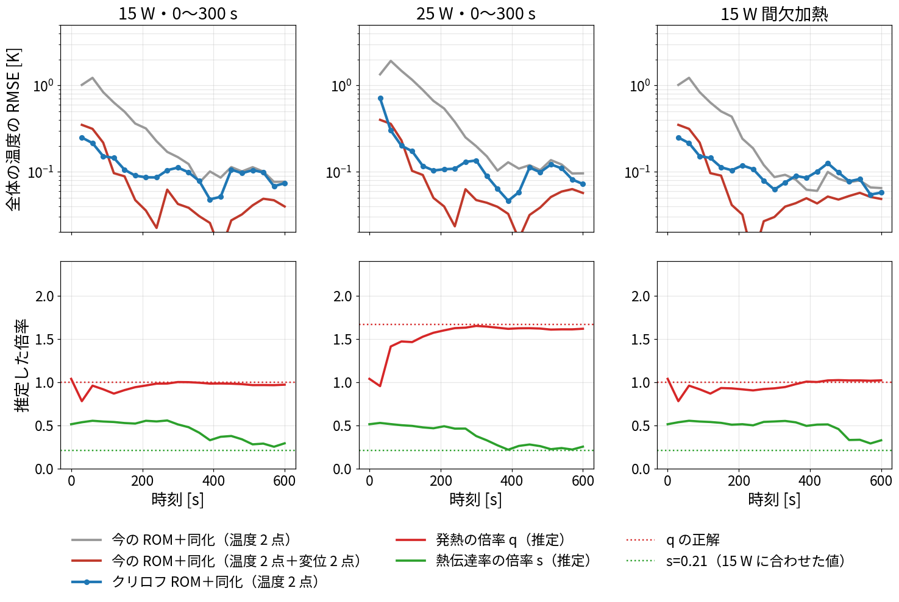
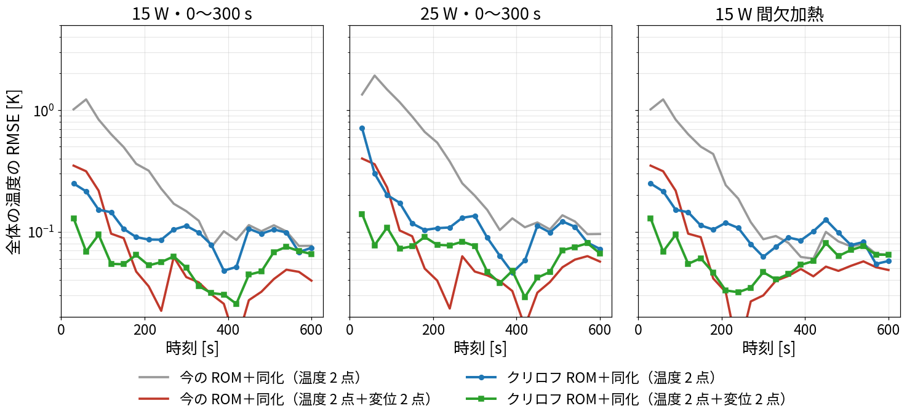
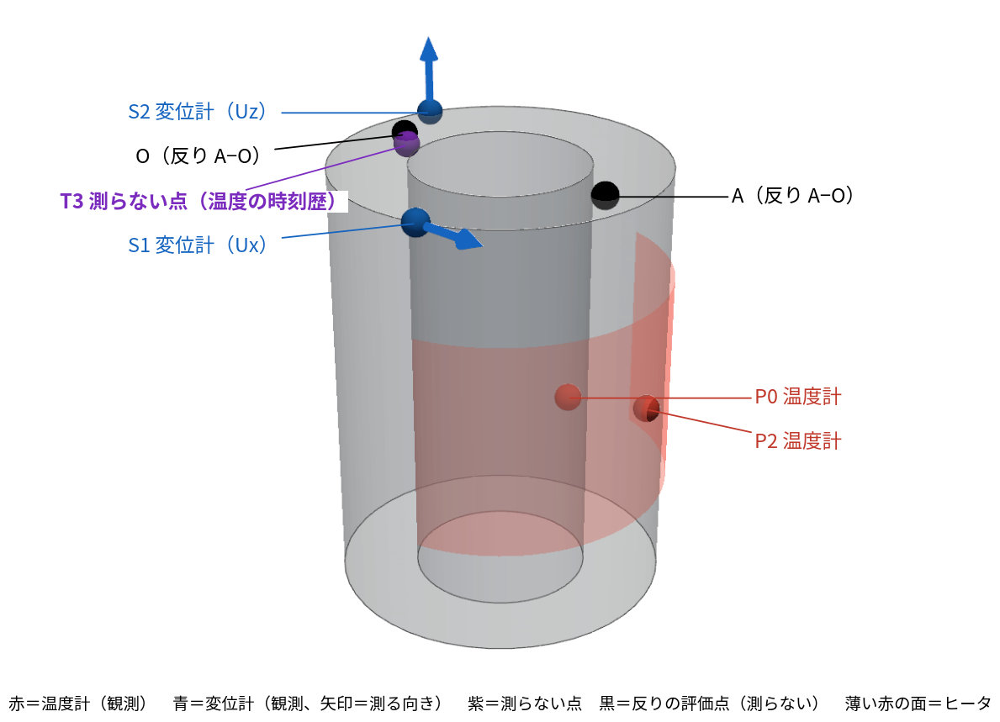
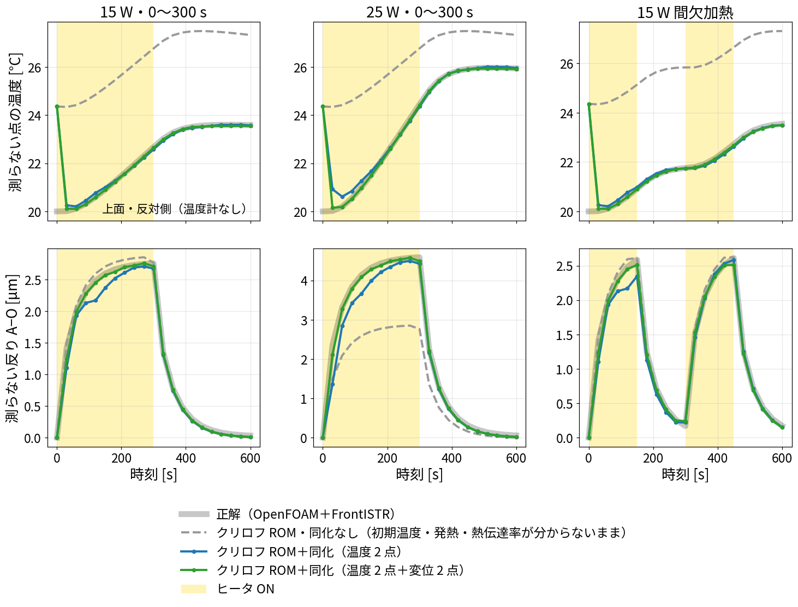
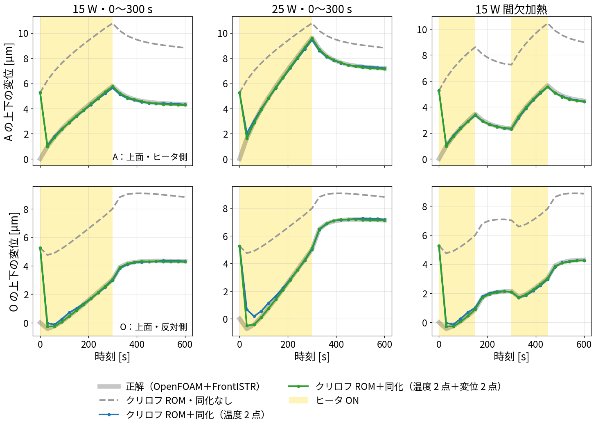

クリロフ部分空間法は、元の熱方程式の行列から温度分布の基底を作り、その少数の係数だけを時間積分する方法です。
全N節点の温度を直接計算する代わりに、r本の分布を足し合わせて温度を近似し、r個の係数を計算します。「部分空間」は、そのr本の基底を足し合わせて表せる温度分布の集合という意味です。

計算手順の模式図。NはFEM節点数、rは保持する基底の本数。CAEの温度分布を描いた図ではありません。
この記事では、中空円筒の熱FEMからROMを作り、既存のPOD・Q-DEIM＋熱回路ROMと比べます。まず元の熱方程式、基底作成、少数の係数の時間積分、全節点への復元の順に説明します。ラプラス変換による理由は§3-6へまとめています。
計算プログラムは run/krylov_rom.py、既存結果は
results/krylov_rom.json
です。後半の§6には、追加された温度観測・変位観測を使うデータ同化の結果があります。前半の§2〜5は基底作成と温度ROM単体の説明、§6はその応用です。
| 今の ROM（POD・Q-DEIM＋熱回路） | クリロフ ROM（この記事） | |
|---|---|---|
| 何から作るか | OpenFOAM の温度の結果（121 枚） | 熱伝導の式の行列（FEM の \(C\)・\(K\)・\(H\)・\(f\)） |
| 状態（未知の数） | 代表 5 点の温度 | 全節点に値を持つ基底に掛ける係数 \(z_1,\ldots,z_r\) |
| 全体の温度 | gappy-PODで復元 | \(\mathbf T\approx T_{\mathrm{air}}\mathbf1+V\mathbf z\) で復元 |
| 係数の決め方 | OpenFOAM に最小二乗で合わせる | 行列から決まる（合わせ込みなし） |
| 熱伝達率 | 合わせ込んだ係数に入る | FEM の境界条件として与える |
両方とも分布を少数の基底で表します。 既存ROMは代表5点の温度を計算しますが、本記事のクリロフROMでは代表点を選ばず、全節点の分布に掛ける係数を計算します。
プログラムの build_fem()
が、Pythonで熱FEMの行列を組み立てています。
円筒（外径 75 mm、内径 40 mm、高さ 100.5 mm）を、FrontISTR と同じ六面体メッシュ（半径 4 × 周 48 × 高さ 20、5,040 節点）に分けます。全節点の温度を \(\mathbf T\)、一定の外気温を \(T_{\mathrm{air}}\) とし、NをFEM節点数とします（今回はN=5,040）。
\[ \underbrace{\mathbf T}_{N\times1}=\begin{bmatrix}T[1]\\T[2]\\\vdots\\T[N]\end{bmatrix}, \qquad \underbrace{\boldsymbol\theta}_{N\times1} =\begin{bmatrix}T[1]-T_{\mathrm{air}}\\T[2]-T_{\mathrm{air}}\\\vdots\\T[N]-T_{\mathrm{air}}\end{bmatrix}. \]
\(\boldsymbol\theta\) は外気温からの温度上昇です。熱方程式は、
\[ \underbrace{C}_{N\times N}\underbrace{\dot{\boldsymbol\theta}}_{N\times1} +\underbrace{G}_{N\times N}\underbrace{\boldsymbol\theta}_{N\times1} =\underbrace{\mathbf f}_{N\times1}P(t),\qquad G=K+H. \]
例えば節点iの式は \(\sum_j C_{ij}\dot\theta[j]+\sum_jG_{ij}\theta[j]=f_iP(t)\) です。全FEMは、このN本の式をまとめて時間積分します。
| 記号 | 何か | 作り方 |
|---|---|---|
| \(C\) | 熱容量の行列 | \(\int\rho c\,N_aN_b\,dV\)（鋼 \(\rho=7850\) kg/m³、\(c=480\) J/(kg K)） |
| \(K\) | 熱伝導の行列 | \(\int\kappa\,\nabla N_a\cdot\nabla N_b\,dV\)（\(\kappa=50\) W/(m K)） |
| \(H\) | 表面の熱伝達の行列 | \(\int h\,N_aN_b\,dA\)（面ごとの \(h\)） |
| \(\mathbf f\) | ヒータ 1 W あたりの熱の入り方 | 外周の +x 側（周長 100 mm、高さ 25〜75 mm）に面積に比例して配る |
| \(P(t)\) | ヒータの電力 [W] | 15 W・25 W・間欠加熱（OpenFOAM と同じ） |
表中の \(N_a,N_b\) はFEM要素内の補間関数、a・bは要素内の節点番号です。\(P(t)\) は既存記事の発熱量Qに相当し、ここではコードに合わせてPと書きます。
表面の \(h\) は、blog_001 で OpenFOAM の CHT から求めた面ごとの実効値を使いました。
| 面 | 外周（ヒータ側 +x） | 外周（反対側 −x） | 内面 | 上面 | 底面 |
|---|---|---|---|---|---|
| \(h\) [W/(m²K)] | 15.8 | 10.5 | 10.8 | 11.9 | 19.5 |
ここでの表面熱伝達率h [W/(m²K)]と、5点熱回路の放熱コンダクタンス \(h_{\mathrm{ROM}}\) [W/K]は単位が異なります。
この FEM（「全 FEM」と呼ぶ）を、時間刻み 2 秒のクランク・ニコルソン法で 0〜600 秒解くと、約 0.9 秒かかります。
一定電力を与えて温度が落ち着くと、\(\dot{\boldsymbol\theta}=\mathbf0\) になります。1 Wあたりの定常温度上昇を \(\mathbf m_0\) とすると、
\[ \underbrace{G}_{N\times N}\underbrace{\mathbf m_0}_{N\times1} =\underbrace{\mathbf f}_{N\times1},\qquad \mathbf m_0=G^{-1}\mathbf f. \]
最初の候補は、ヒータを入れ続けたときの定常温度分布の形です。 一定電力 \(P_0\) [W]なら \(\boldsymbol\theta_{\mathrm{ss}}=\mathbf m_0P_0\) です。
\(G^{-1}\mathbf f\)
は「Gの連立方程式を解く」という意味で使っています。コードは
lu.solve(f) で解き、大きな逆行列を作りません。
\(\mathbf m_0\) は、電力がずっと一定のときの形です。でも実際は、ヒータを入れた直後や切った直後のように、電力 \(P(t)\) が変わります。そのとき温度は、定常の形にすぐにはならず、遅れてついていきます。この「遅れ」がどんな形になるかを、元の式から求めます。
元の式は
\[ C\,\frac{d\boldsymbol\theta}{dt}+G\,\boldsymbol\theta=\mathbf f\,P(t). \]
左辺の \(G\boldsymbol\theta\) だけを残して、両辺に左から \(G^{-1}\) を掛けます（\(G\) の連立方程式を解く、という意味）。
\[ \boldsymbol\theta =\underbrace{G^{-1}\mathbf f}_{\mathbf m_0}\,P(t)\;-\;G^{-1}C\,\frac{d\boldsymbol\theta}{dt}. \tag{1} \]
\[ \frac{d\boldsymbol\theta}{dt}\approx\mathbf m_0\,\frac{dP}{dt} \quad\Rightarrow\quad \boldsymbol\theta\approx\mathbf m_0P-\underbrace{G^{-1}C\,\mathbf m_0}_{\mathbf m_1}\,\frac{dP}{dt}. \]
もう一度入れ直すと、次の項が出ます。
\[ \boldsymbol\theta\approx\mathbf m_0\,P\;-\;\mathbf m_1\,\frac{dP}{dt}\;+\;\underbrace{G^{-1}C\,\mathbf m_1}_{\mathbf m_2}\,\frac{d^2P}{dt^2}\;-\;\cdots \]
つまり、温度は、形 \(\mathbf m_0,\mathbf m_1,\mathbf m_2,\dots\) の足し合わせで表せて、時間とともに変わるのは、その係数（\(P\)、\(dP/dt\)、\(d^2P/dt^2\) …）だけです。だから、この形を基底の候補にします。
上の式から、形は次の順番で作れます。
\[ \begin{aligned} G\,\mathbf m_0&=\mathbf f &&\text{（定常の形）}\\ G\,\mathbf m_1&=C\,\mathbf m_0 &&\text{（1 つ目の遅れの形）}\\ G\,\mathbf m_2&=C\,\mathbf m_1 &&\text{（2 つ目の遅れの形）}\\ &\ \vdots \end{aligned} \]
どれも「右辺を作って、\(G\) の連立方程式を解く」だけです。2 行目以降は、1 つ前の形に熱容量 \(C\) を掛けたものを、熱源のかわりに右辺に置く、という作業です。\(C\mathbf m_0\) は「温度を \(\mathbf m_0\) の形で上げるときに、各節点の熱容量が吸い込む熱」なので、\(\mathbf m_1\) は「その熱を吸い込まれたせいで生まれる、温度の遅れの形」になります。
番号 \(k\) は基底の候補の番号で、実際の時刻を進める計算ではありません。
\(C,G,f\) がただの数なら、\(\tau=C/G\)（時定数）として、
\[ m_0=\frac fG,\qquad m_1=\tau\,m_0,\qquad m_2=\tau^2 m_0, \qquad \theta\approx m_0\left(P-\tau\,\frac{dP}{dt}+\tau^2\frac{d^2P}{dt^2}-\cdots\right). \]
これは、時定数 \(\tau\) の 1 次遅れの応答そのものです（電力が増えている間は、\(\tau\,dP/dt\) だけ遅れる）。節点が多いと、\(\mathbf m_1,\mathbf m_2\) は \(\mathbf m_0\) と違う形になり、場所ごとの遅れの違い（ヒータ側が先に温まる、など）を表します。図 0 の 2 本目以降が、その形です。
最初のr本の候補から作れるベクトル全体は、
\[ \mathcal K_r= \left\{\beta_0\mathbf m_0+\beta_1\mathbf m_1+\cdots+\beta_{r-1}\mathbf m_{r-1} \ ;\ \beta_0,\ldots,\beta_{r-1}\in\mathbb R\right\}. \]
\(\beta_k\) は任意の係数です。これを短く書くと、
\[ \mathcal K_r=\operatorname{span}\{\mathbf m_0,\mathbf m_1,\ldots,\mathbf m_{r-1}\}. \]
spanは「そのベクトルの足し合わせで表せるものすべて」という意味です。 候補r本が独立なら、この空間はr次元です。
絵で見ると。 下の 4 つは、実際の円筒で作った基底の最初の 4 本です（§3-4 の手順で、前の形と重ならないようにしたもの）。温度は、この形の足し合わせ \(z_1\mathbf v_1+z_2\mathbf v_2+\cdots\) で表し、時間とともに変わるのは係数 \(z_j\) だけです。5,040 個の節点の温度の代わりに、\(r\) 個の係数だけを計算すればよい、これが「縮める」ということです。

図 0 クリロフ基底の最初の 4
本（run/make_krylov_basis_fig.py）。1
本目はヒータを入れ続けたときに落ち着く温度の形で、この円筒は熱がよく伝わるのでほぼ一様になる。2
本目以降は、そこへ向かう途中の「ヒータ側が先に温まる」形で、本数を増やすほど細かい形が加わる。
なぜ重複を除くのか。 §3-2 の候補 \(\mathbf m_0,\mathbf m_1,\mathbf m_2,\dots\) は、そのままだとほとんど同じ形です。この円筒で実際に計算すると、2 つの候補の「向きの近さ」（下の内積で測った cos）は、
| \(\mathbf m_0\) と \(\mathbf m_1\) | \(\mathbf m_1\) と \(\mathbf m_2\) | \(\mathbf m_2\) と \(\mathbf m_3\) | |
|---|---|---|---|
| 向きの近さ（1 なら完全に同じ向き） | 0.99956 | 1.00000 | 1.00000 |
でした。この円筒は熱がよく伝わるので、温まり方の形はほぼ一様で、遅れの形 \(\mathbf m_1\) もほとんど \(\mathbf m_0\) と同じ形になるためです（§3-2 の 1 節点の例で \(m_1=\tau m_0\) になったのと同じ）。
このまま並べても、同じ情報が何度も入るだけで、新しい形は増えません。しかも、ほぼ同じ向きのベクトルで連立方程式を解くと、計算が不安定になります。そこで、新しい候補から「もう持っている形で表せる部分」を引き、残った「新しい部分」だけを次の基底にします。

2 次元の模式図（run/make_gram_schmidt_fig.py）。①
次の候補 \(\mathbf w\) は 1 本目 \(\mathbf v_1\) とほぼ同じ向き。② \(\mathbf w\) のうち \(\mathbf v_1\)
の向きの成分（影）を引くと、短い「残り」が出る。③ 残りを長さ 1
にそろえて 2 本目 \(\mathbf v_2\)
にする。この円筒では、\(\mathbf m_1\)
から \(\mathbf m_0\)
の成分を引くと、残りは元の長さの約 3 % だった。この 3 %
が「遅れによる形の違い」で、新しい情報。
「長さ」と「向きの近さ」を熱容量 \(C\) で測る理由。 普通の長さ \(\sqrt{\mathbf x^{\mathsf T}\mathbf x}\) ではなく、熱容量 \(C\) を重みにした長さを使います。
\[ \langle\mathbf x,\mathbf y\rangle_C=\mathbf x^{\mathsf T}C\mathbf y, \qquad \lVert\mathbf x\rVert_C=\sqrt{\mathbf x^{\mathsf T}C\mathbf x}. \]
最初は \(\mathbf v_1=\mathbf m_0/\lVert\mathbf m_0\rVert_C\) です。j本目では候補 \(\mathbf w=G^{-1}C\mathbf v_{j-1}\) から、
\[ \widetilde{\mathbf w} =\mathbf w-\sum_{\ell=1}^{j-1}\mathbf v_\ell (\mathbf v_\ell^{\mathsf T}C\mathbf w), \qquad \mathbf v_j=\frac{\widetilde{\mathbf w}} {\sqrt{\widetilde{\mathbf w}^{\mathsf T}C\widetilde{\mathbf w}}} \]
として作ります。コードでは丸め誤差を抑えるため、成分を除く処理を2回行います。このアーノルディ法で得る基底行列は、
\[ \underbrace{V}_{N\times r} =\begin{bmatrix} v_1[1]&v_2[1]&\cdots&v_r[1]\\ v_1[2]&v_2[2]&\cdots&v_r[2]\\ \vdots&\vdots&&\vdots\\ v_1[N]&v_2[N]&\cdots&v_r[N] \end{bmatrix}, \qquad V^{\mathsf T}CV=I_r. \]
1列が全N節点に値を持つ1本の基底です。 候補が完全に重複して残差が0になれば、それ以上は独立な基底を追加できません。今回確認したr=2〜20では基底を作れています。
式だけでは分かりにくいので、節点が 3 つの小さな例で、\(V\) を実際に作ってみます。棒を 3 つに分け、節点 1 にヒータがあるとします（数字は説明のために私が決めたもの）。
\[ C=\begin{bmatrix}1&0&0\\0&1&0\\0&0&1\end{bmatrix},\qquad G=\begin{bmatrix}2&-1&0\\-1&2&-1\\0&-1&2\end{bmatrix},\qquad \mathbf f=\begin{bmatrix}1\\0\\0\end{bmatrix} \]
手順 1：1 本目の候補 \(\mathbf m_0\) を作る（\(G\mathbf m_0=\mathbf f\) を解く）
\[ \mathbf m_0=G^{-1}\mathbf f=\begin{bmatrix}0.75\\0.50\\0.25\end{bmatrix} \]
ヒータを入れ続けたときに落ち着く温度の形です（ヒータに近い節点 1 が一番高い）。
手順 2：長さを 1 にそろえて \(\mathbf v_1\) にする
\[ \lVert\mathbf m_0\rVert_C=\sqrt{\mathbf m_0^{\mathsf T}C\mathbf m_0}=\sqrt{0.75^2+0.50^2+0.25^2}=0.935,\qquad \mathbf v_1=\frac{\mathbf m_0}{0.935}=\begin{bmatrix}0.802\\0.535\\0.267\end{bmatrix} \]
手順 3：次の候補 \(\mathbf w\) を作る（右辺を \(C\mathbf v_1\) にして、また \(G\) を解く）
\[ G\mathbf w=C\mathbf v_1\quad\Rightarrow\quad \mathbf w=\begin{bmatrix}0.935\\1.069\\0.668\end{bmatrix} \]
手順 4：\(\mathbf w\) から、\(\mathbf v_1\) で表せる部分（影）を引く
影の大きさは \(\mathbf v_1^{\mathsf T}C\mathbf w=0.802\times0.935+0.535\times1.069+0.267\times0.668=1.50\) なので、
\[ \widetilde{\mathbf w}=\mathbf w-1.50\,\mathbf v_1 =\begin{bmatrix}0.935\\1.069\\0.668\end{bmatrix}-1.50\begin{bmatrix}0.802\\0.535\\0.267\end{bmatrix} =\begin{bmatrix}-0.267\\0.267\\0.267\end{bmatrix}. \]
残ったのは「節点 1 が低く、節点 2・3 が高い」形です。これが、\(\mathbf v_1\) だけでは表せない新しい形（時間の遅れで生まれる、温まり方の偏りの違い）です。
手順 5：長さを 1 にそろえて \(\mathbf v_2\) にする
\[ \lVert\widetilde{\mathbf w}\rVert_C=0.463,\qquad \mathbf v_2=\frac{\widetilde{\mathbf w}}{0.463}=\begin{bmatrix}-0.577\\0.577\\0.577\end{bmatrix} \]
確かめ：\(\mathbf v_1^{\mathsf T}C\mathbf v_2=0\)（重なりがない）、\(\mathbf v_2^{\mathsf T}C\mathbf v_2=1\)（長さ 1）です。
手順 6：3 本目も同じ（\(G\mathbf w=C\mathbf v_2\) を解き、\(\mathbf v_1\) と \(\mathbf v_2\) の両方の影を引き、長さを 1 にする）
\[ \mathbf w=\begin{bmatrix}0\\0.577\\0.577\end{bmatrix},\quad \widetilde{\mathbf w}=\mathbf w-0.463\,\mathbf v_1-0.667\,\mathbf v_2=\begin{bmatrix}0.014\\-0.055\\0.069\end{bmatrix},\quad \mathbf v_3=\begin{bmatrix}0.154\\-0.617\\0.772\end{bmatrix} \]
できあがり： 並べたものが \(V\) です。
\[ V=\begin{bmatrix}\mathbf v_1&\mathbf v_2\end{bmatrix}=\begin{bmatrix}0.802&-0.577\\0.535&0.577\\0.267&0.577\end{bmatrix}\ （r=2\ のとき）,\qquad V^{\mathsf T}CV=\begin{bmatrix}1&0\\0&1\end{bmatrix} \]
順番のまとめ（実際の円筒でも、節点が 5,040 個になるだけで同じ）
| 手順 | すること | コード（krylov_basis） |
|---|---|---|
| 1 | \(G\mathbf m_0=\mathbf f\) を解く | v = lu.solve(f) |
| 4 | すでにある基底の影を引く（1 本目は何もしない） | v = v - V[:, :j] @ (V[:, :j].T @ (C @ v)) |
| 2・5 | 長さを 1 にそろえて \(j\) 本目にする | V[:, j] = v / np.sqrt(v @ (C @ v)) |
| 3 | 次の候補：\(G\mathbf w=C\mathbf v_j\) を解く | v = lu.solve(C @ V[:, j]) |
| 6 | 影を引く → 長さをそろえる → 次の候補、を \(r\) 本になるまでくりかえす | for j in range(r) |
温度上昇を、
\[ \underbrace{\boldsymbol\theta}_{N\times1} \approx\underbrace{V}_{N\times r} \underbrace{\begin{bmatrix}z_1\\z_2\\\vdots\\z_r\end{bmatrix}}_{\mathbf z:\ r\times1}, \qquad \mathbf T\approx T_{\mathrm{air}}\mathbf1+V\mathbf z \]
と近似します。節点iでは \(T[i]\approx T_{\mathrm{air}}+\sum_jv_j[i]z_j\) です。\(z_j\) は基底に掛ける係数で、代表点の温度そのものではありません。 ここで足す基準は外気温です。PODの時間平均温度場とは異なります。
Vを時間に依存しない基底として元の式へ代入します。
\[ CV\dot{\mathbf z}+GV\mathbf z\approx\mathbf fP(t). \]
左から \(V^{\mathsf T}\) を掛け、縮約後の式として等号を課します（ガラーキン射影）。
\[ \underbrace{V^{\mathsf T}CV}_{C_r:\ r\times r}\dot{\mathbf z} +\underbrace{V^{\mathsf T}GV}_{G_r:\ r\times r}\mathbf z =\underbrace{V^{\mathsf T}\mathbf f}_{\mathbf f_r:\ r\times1}P(t). \]
今回は \(C_r=I_r\) になるよう正規化しています。コードは数値誤差も含めた \(C_r\) を計算して使用します。時間積分するのはr個の係数だけで、その後 \(T_{\mathrm{air}}\mathbf1+V\mathbf z\) から全節点温度を復元します。
今回のC・Gが対称正定値で、Vの列が独立なら、\(C_r,G_r\) も対称正定値です。そのため、無入力時に温度上昇が減衰する性質を保持できます。対称性だけから正定値が決まるわけではありません。
今回の初期温度は全節点で外気温なので \(\mathbf z(0)=\mathbf0\) です。別の初期温度場を使う場合には、その分布を基底で表せるかも確認します。
ここは基底の作り方の理論的な補足です。初期温度上昇0として元の式をラプラス変換すると、
\[ (G+sC)\boldsymbol\theta(s)=\mathbf fP(s),\qquad \boldsymbol\theta(s)=(G+sC)^{-1}\mathbf fP(s). \]
sはラプラス変換の変数で、\(s=0\) は定常応答に対応します。\(G+sC=G(I+sG^{-1}C)\) と分け、0付近で展開します。
\[ \begin{aligned} (G+sC)^{-1}\mathbf f &=(I+sG^{-1}C)^{-1}G^{-1}\mathbf f\\ &=\left[I-sG^{-1}C+s^2(G^{-1}C)^2-\cdots\right]G^{-1}\mathbf f\\ &=\mathbf m_0-s\mathbf m_1+s^2\mathbf m_2-\cdots. \end{aligned} \]
展開の係数（符号を含めた \((-1)^k\mathbf m_k\)）をモーメントと呼びます。§3-2の候補は、元のFEMが入力にどう応答するかを表す、この展開の係数から作ったものです。
最初のr本を含む基底を使うと、この設定では縮約モデルも最初のr個の係数を再現できます。これがモーメント合わせです。0付近での一致を使うため、急なON/OFFを含む任意の入力について、時間領域の誤差を一律に保証するものではありません。rを変え、実際の入力履歴で確認します。TUMのクリロフROMの説明
| 計算 | コード中の場所 | 意味 |
|---|---|---|
| 行列の組立て | build_fem() |
メッシュ・物性・境界条件からC・G・fを作る |
| 最初の候補 | krylov_basis() の lu.solve(f) |
\(G\mathbf m_0=\mathbf f\) を解く |
| 既存成分を除く | v - V[:, :j] @ (V[:, :j].T @ (C @ v)) |
Cを使った射影成分を引く |
| 正規化 | v / np.sqrt(v @ (C @ v)) |
Cを使った長さを1にする |
| 次の候補 | lu.solve(C @ V[:, j]) |
\(G\mathbf w=C\mathbf v_j\) を解く |
| 縮約行列の計算 | run_rom() の Cr, Gr, fr |
\(V^{\mathsf T}CV,V^{\mathsf T}GV,V^{\mathsf T}\mathbf f\) |
| 復元 | np.array(out) @ V.T |
時刻ごとに \(V\mathbf z\) を計算し、行方向に並べて返す |
GのLU分解は基底作成時に1回行って使い回します。時間積分は全FEM・ROMともクランク・ニコルソン法、刻み2秒です。
同じ熱FEMを縮めたときの誤差を比較します。下表は今回の再確認値です。0〜600秒を30秒ごとに出力した21時刻と全5,040節点について、最大絶対差を求めています。
| 基底数r | 2 | 3 | 5 | 10 | 20 |
|---|---|---|---|---|---|
| 15 W連続加熱 [K] | 0.3567 | 0.1348 | 0.04123 | 0.004584 | 0.0005389 |
| 15 W間欠加熱 [K] | 0.3456 | 0.1370 | 0.04127 | 0.004584 | 0.0005389 |
この一定境界条件のFEMは、r=10でも元のFEMに近い応答を再現できました。 ここで確認したのは縮約誤差で、元モデルとOpenFOAMのCHTとの違いは次節で評価します。
OpenFOAM の温度を節点へ移したものを正解にして、全節点の温度の差を比べました。

図 1 上：OpenFOAMの代表点P2に最も近いFEM節点の温度。中：全節点の温度の RMSE（OpenFOAM との差、対数の目盛り）。下：縮める誤差（クリロフ ROM と全 FEM の差、全節点の最大）。全 FEM（茶の太い線）とクリロフ ROM r=5（丸）・r=10（四角）は、上と中の段ではほぼ重なる。r=5・r=10 の違いは下の段で見える（加熱の入り切りの直後に誤差が大きくなる）。
評価は、OpenFOAMの固体温度をIDWでFEM節点へ写し、各時刻の全節点RMSEを求め、その最大値を取っています。
\[ \mathrm{RMSE}(t_k)=\sqrt{\frac1N\sum_{i=1}^N \left(T_{\mathrm{model}}[i,t_k]-T_{\mathrm{CHT\ mapped}}[i,t_k]\right)^2}, \qquad E_{\mathrm{RMSE}}=\max_k\mathrm{RMSE}(t_k). \]
| 全節点の RMSE の最大 [K] | 15 W | 25 W | 間欠加熱 |
|---|---|---|---|
| 全 FEM（CHT の \(h\) をそのまま使う） | 0.54 | 0.85 | 0.46 |
| クリロフ ROM r=10（同じ \(h\)） | 0.54 | 0.85 | 0.46 |
| クリロフ ROM r=10（\(h\) を 0.21 倍して 15 W に合わせた） | 0.04 | 0.06 | 0.04 |
| 今の ROM（5 点の熱回路＋gappy-POD） | 0.03 | 0.08 | 0.02 |
| 最大の差（全節点・全時刻）[K] | 15 W | 25 W | 間欠加熱 |
|---|---|---|---|
| クリロフ ROM r=10（\(h\) を合わせた版） | 0.20 | 0.33 | 0.20 |
| 今の ROM | 0.04 | 0.11 | 0.05 |
§4・§5 から、ずれの出どころは次のように分けられます。
\[ \underbrace{\boldsymbol\theta_{\mathrm{OpenFOAM}}-\boldsymbol\theta_{\mathrm{ROM}}}_{\text{全体のずれ}} =\underbrace{\left(\boldsymbol\theta_{\mathrm{OpenFOAM}}-\boldsymbol\theta_{\mathrm{FEM}}\right)}_{\text{モデルのずれ：0.5〜0.9 K}} +\underbrace{\left(\boldsymbol\theta_{\mathrm{FEM}}-\boldsymbol\theta_{\mathrm{ROM}}\right)}_{\text{縮める誤差：r=10 で 0.005 K}} \]
ここからは、係数の時間発展を観測値で補正する計算です。前半の10本のクリロフ基底に、一様な初期温度差を表す基底を1本追加しているため、温度の係数はm=11個です。r=10のROM単体比較と、状態の数が異なります。
そこで、熱伝達率の倍率 \(s\)
を未知の数に入れ、測った温度で直しました（run/krylov_da.py）。
\[ \underbrace{V^{\mathsf T}CV}_{C_r}\frac{d\mathbf z}{dt}+\Bigl(\underbrace{V^{\mathsf T}KV}_{K_r}+s\,\underbrace{V^{\mathsf T}HV}_{H_r}\Bigr)\mathbf z=\underbrace{V^{\mathsf T}\mathbf f}_{\mathbf f_r}\cdot 15\,\mathrm W\cdot q\cdot\mathrm{on}(t) \]
| 設定 | 内容 |
|---|---|
| 状態（EnKF で直すもの） | クリロフの座標 \(\mathbf z\)（r=10 ＋ 一様な温度の成分 1 つ）、発熱の倍率 \(q\)、熱伝達率の倍率 \(s\) |
| 観測 | 温度計 P2・P0（OpenFOAM の値＋ノイズ 0.3 K、30 秒ごと）。今の ROM の「温度 2 点」と同じ |
| 測る前のばらつき | 初期温度 20 °C の −3〜+12 K、\(q\) は 0.3〜1.8、\(s\) は 0.1〜1.5（対数で一様） |
| EnKF | 60 メンバー、膨張係数 1.02、乱数 5 通りの平均 |
基底 \(V\) は \(s=1\) で 1 回作り、\(s\) が変わっても使い回します（\(K_r\)・\(H_r\) を前もって計算しておけば、\(s\) を変えるのは足し算だけ）。

図 2 上：全体の温度の RMSE（OpenFOAM との差）。下：推定した発熱の倍率 \(q\)（赤）と熱伝達率の倍率 \(s\)（緑）。点線は \(q\) の正解と、15 W に合わせた \(s=0.21\)。今の ROM の線は presen_001 §11 の結果（全セルで計算）、クリロフ ROM の線は全節点で計算したもので、比べ方が少し違う。
比較条件の読み方：クリロフ側はFEM節点、既存ROM側はOpenFOAMセルで温度誤差を評価しています。初期温度のばらつきも、クリロフ側は一様な温度差、既存5点ROM側は点ごとの温度差を使っています。下表はそれぞれの設定で得た値です。方式自体の優劣を比較するには、評価位置と初期分布もそろえる必要があります。
| 全体の温度の RMSE（加熱中 30〜300 秒の平均）[K] | 15 W | 25 W | 間欠加熱 |
|---|---|---|---|
| 今の ROM＋同化（温度 2 点） | 0.54 | 0.88 | 0.53 |
| クリロフ ROM＋同化（温度 2 点） | 0.14 | 0.21 | 0.14 |
| 今の ROM＋同化（温度 2 点＋変位 2 点） | 0.13 | 0.14 | 0.12 |
| 600 秒での推定値 | 15 W | 25 W | 間欠加熱 |
|---|---|---|---|
| 発熱の倍率 \(q\)（正解） | 0.97（1.00） | 1.62（1.67） | 1.02（1.00） |
| 熱伝達率の倍率 \(s\) | 0.29 | 0.25 | 0.33 |
クリロフ ROM
の温度から熱変形を出すため、熱弾性の行列を作りました（run/krylov_thermoelastic.py）。
\[ K_u\,\mathbf u=L\,\boldsymbol\theta,\qquad K_u=\int B^{\mathsf T}DB\,dV,\qquad L=\int B^{\mathsf T}D\,\mathbf m\,\alpha\,N^{\mathsf T}dV \]
クリロフ ROM では \(\boldsymbol\theta=V\mathbf z\) なので、
\[ \mathbf u=\underbrace{K_u^{-1}LV}_{W_z\ (3N\times m)}\ \mathbf z . \]
\(W_z\) を前もって 1 回計算しておけば、変位は行列 × ベクトル 1 回で出ます。
ここでNはFEM節点数、mは温度の係数の数（このデータ同化では11）です。
行列の確かめ。 OpenFOAM の温度（節点へ移したもの）を入れて変位を計算し、FrontISTR の変位（正解）と比べました。
| 15 W | 25 W | 間欠加熱 | |
|---|---|---|---|
| 変位の最大 [µm] | 6.24 | 10.38 | 6.10 |
| FrontISTR との差の最大 [µm] | 0.014 | 0.023 | 0.013 |
| 反り A−O の差の最大 [µm] | 0.007 | 0.011 | 0.006 |
差は変位の 0.2 % 程度で、FrontISTR と同じ計算ができています。
変位の観測も使ったデータ同化。 §6-2 の同化に、変位計 S1（Ux）・S2（Uz）（blog_012 の目的指向で選んだ 2 本）を足しました。予報した変位は \(W_z\mathbf z\) の 2 行です。

図 3 全体の温度の RMSE（OpenFOAM との差）。灰・赤は今の ROM（presen_001 §11、全セルで計算）、青・緑はクリロフ ROM（全節点で計算）。
| 加熱中（30〜300 秒）の平均 | 観測 | 15 W | 25 W | 間欠加熱 |
|---|---|---|---|---|
| 全体の温度の RMSE [K] | 今の ROM：温度 2 点 | 0.54 | 0.88 | 0.53 |
| 今の ROM：温度 2 点＋変位 2 点 | 0.13 | 0.14 | 0.12 | |
| クリロフ ROM：温度 2 点 | 0.13 | 0.21 | 0.13 | |
| クリロフ ROM：温度 2 点＋変位 2 点 | 0.07 | 0.09 | 0.06 | |
| 測らない反り A−O の誤差 [µm] | 今の ROM：温度 2 点 | 0.775 | 1.417 | 0.635 |
| 今の ROM：温度 2 点＋変位 2 点 | 0.076 | 0.083 | 0.072 | |
| クリロフ ROM：温度 2 点 | 0.219 | 0.348 | 0.199 | |
| クリロフ ROM：温度 2 点＋変位 2 点 | 0.090 | 0.100 | 0.086 |
時刻歴で見ると。 測らない点の温度と、測らない反りの時刻歴です。点の場所は下の図のとおりです。

時刻歴を描いた点の場所（run/make_da_points_fig.py）。赤＝温度計
P2・P0（観測）、青＝変位計
S1（Ux）・S2（Uz）（観測、矢印＝測る向き）、紫＝温度の時刻歴を描いた測らない点
T3（上面・反対側）、黒＝反り A−O
の評価点（測らない）、薄い赤の面＝ヒータ。

図 4 上：測らない点 T3 の温度。下：測らない反り
A−O。灰の太線が正解、灰の破線がクリロフ
ROM・同化なし（初期温度・発熱・熱伝達率が分からないまま、初めのばらつきの平均で進めただけ）、青がクリロフ
ROM＋温度 2 点の同化、緑がクリロフ ROM＋温度 2 点＋変位 2 点の同化。乱数
5 通りの時刻歴の平均（run/krylov_thermoelastic.py）。初めは
20 °C の −3〜+12 K のばらつきの平均（約 24.5 °C）から始まり、30 秒（1
回目の補正）で正解に近づく。変位 2
点を足すと、加熱中の反りがより正解に近くなる。
| 加熱中（30〜300 秒）の平均 | クリロフ ROM・同化なし | 温度 2 点で同化 | 温度 2 点＋変位 2 点で同化 |
|---|---|---|---|
| 全体の温度の RMSE 15 W・25 W・間欠 [K] | 4.24・2.93・4.22 | 0.13・0.21・0.13 | 0.07・0.09・0.06 |
| 測らない反りの誤差 15 W・25 W・間欠 [µm] | 0.101・1.531・0.063 | 0.219・0.348・0.199 | 0.090・0.100・0.086 |
A・O それぞれの変位で見ると。 反り A−O は、A と O の上下の変位の「差」です。A と O それぞれの上下の変位も描きました。

図 4b 上：A（上面・ヒータ側）の上下の変位。下：O（上面・反対側）の上下の変位。線の意味は図 4 と同じ。
| クリロフ ROM | 今の ROM | |
|---|---|---|
| 強み | 行列から作るので学習データが要らない。縮める誤差を \(r\) で調べられ、物理の式とつながっている | OpenFOAM に合わせるので、熱伝達率のずれなども係数に吸収される |
| 弱み | 元の FEM の条件（熱伝達率など）が合っていないと、そのずれがそのまま残る | 係数の物理の意味が弱い（presen_001 §7-4）。学習データが要る |
| この円筒での精度（RMSE） | 0.04〜0.06 K（\(h\) を 1 つの係数で合わせた場合） | 0.02〜0.08 K |
熱解析（固体の熱伝導だけ）なら、クリロフ法のほうが楽で確実です。
熱流体解析（流れと熱の連成、CHT）では、そのままでは使いにくいです。
| クリロフ ROM | 今の ROM（POD・Q-DEIM＋熱回路） | |
|---|---|---|
| 作るのに要るもの | 熱解析の行列 | 正解の計算結果（CHT でもよい） |
| 流体を含む問題 | \(h\) を与える必要がある | CHT の結果から直接作れる（流れの影響も係数に入る） |
| 同化なしの精度（OpenFOAM との RMSE） | 0.5〜0.9 K（\(h\) は CHT の値）、0.04〜0.06 K（\(h\) を 1 つの係数で合わせた場合） | 0.02〜0.08 K |
| 同化あり（温度 2 点＋変位 2 点）の全体の温度 | 0.06〜0.09 K | 0.12〜0.14 K |
| 同化あり の測らない反り | 0.086〜0.100 µm | 0.072〜0.083 µm |
| 条件の変化への強さ | 式から作るので、発熱の変化や熱源の追加に強い。熱伝達率の変化には弱い | 学習した温度分布の型から外れる変化（熱源の位置など）に弱い |
おすすめの組み合わせ：固体はクリロフ ROM、熱伝達率はデータ同化で直す。
今の ROM（データから作る）が向いているのは、熱解析の行列が手に入らない（商用ソフトの結果しかない）場合や、熱伝達率の分布が複雑で少ない係数では表せない場合です。
流れが変わる問題（博士研究の方向 B）では、「固体はクリロフ、流れによる熱伝達率の分布は CHT の計算から少数の型（POD）で表し、その係数を同化で直す」という組み合わせが有力な案になります。この組み合わせは試していません（未実施）。 今回は熱伝達率を全体に 1 つの係数で直しただけで、面ごと・場所ごとの分布は直していません。
| 方法 | 中身 | 長所 | 短所 |
|---|---|---|---|
| POD–ガラーキン（OpenFOAM なら ITHACA-FV、Stabile & Rozza 2018） | 流れと温度の式を、POD の型に射影して縮める | 物理の式に基づく | 非線形の項で不安定になりやすく、安定化の工夫が要る。ソルバーの中に手を入れる必要がある |
| オペレータ推論（Peherstorfer & Willcox 2016） | 計算結果から、線形＋2 次の小さな式を最小二乗で学習する | ソルバーに手を入れなくてよい。流れの対流の 2 次の形に合う | 学習した範囲の外に弱い。データの質に左右される |
| パラメトリック ROM／LPV（Ansys Twin Builder の LPV ROM など） | 流量ごとに線形 ROM を作り、流量で補間・切り替える | 流量が変わる問題にそのまま合う。商用ソフトで実績がある | 流量の点ごとに計算が要る |
| DMD（動的モード分解） | 時刻歴データから線形の時間発展を取り出す | 簡単で速い | 入力（発熱・流量）が変わる問題には工夫が要る |
| ニューラルネット（オートエンコーダ＋LSTM、ニューラル作用素など） | データから非線形の関係を学習する | 複雑な流れも表せる | 大量の学習データが要る。説明・外挿が弱い |
| 固体は線形 ROM ＋ 熱伝達率を少数の係数で表す（勧める） | 固体の熱伝導はクリロフ（または熱回路）で縮め、流れの影響は表面の熱伝達率の分布を POD の型で表す。係数を流量の関数にし、データ同化で直す | 固体は物理の式どおりで熱源の変化に強い。流れの非線形を直接解かなくてよい | 熱伝達率の型を作るのに、流量を変えた CHT が数本要る。流体の温度そのものは直接出ない |
この研究（工作機械の熱変位、クーラントの流量が変わる）では、最後の行の組み合わせを勧めます。
次の手順（どれも未実施）：① 108 のクーラントタンク（流量を変えた case_000〜002）で固体表面の熱伝達率の分布を取り出し、POD で何個の型で表せるかを見る → ② その係数を流量の関数にしてクリロフ ROM の熱伝達率に入れる → ③ 流量を変えた条件で係数を同化で直し、OpenFOAM と比べる。
| プログラム | すること |
|---|---|
run/krylov_thermoelastic.py |
熱弾性行列と、温度・変位を使うデータ同化（§6-3） |
run/krylov_da.py |
クリロフ ROM ＋ EnKF（温度 2 点で \(\mathbf z\)・\(q\)・\(s\)
を直す）（図 2、results/krylov_da.json） |
run/krylov_rom.py |
FEM の行列を作る、クリロフ基底を作る、全 FEM・クリロフ ROM・今の ROM
を 3 条件で解いて OpenFOAM と比べる（図
1、results/krylov_rom.json） |
クリロフ基底（アーノルディ法、\(C\) の内積で正規直交化）：
def krylov_basis(fem, r):
C, G, f = fem["C"], fem["G"], fem["f"]; lu = splu(G) # G = K + H を 1 回だけ LU 分解
V = np.zeros((len(f), r)); v = lu.solve(f) # 1 本目：G⁻¹f（定常の温度分布）
for j in range(r):
for _ in range(2): # すでにある基底の成分を引く（2 回）
v = v - V[:, :j] @ (V[:, :j].T @ (C @ v))
V[:, j] = v / np.sqrt(v @ (C @ v)) # C の内積で大きさ 1
v = lu.solve(C @ V[:, j]) # 次：G⁻¹C v
return V縮めた式の時間積分（クランク・ニコルソン法）：
Cr = V.T @ (C @ V); Gr = V.T @ (G @ V); fr = V.T @ f # r×r、r×1
Al = np.linalg.inv(Cr / DT + Gr / 2); Ar = Cr / DT - Gr / 2
z = Al @ (Ar @ z + fr * (P(t) + P(t + DT)) / 2) # 1 ステップ。温度は V @ zsample/106_0_pod_selected_rom/。run/krylov_rom.py。保存結果：results/krylov_rom.json。h倍率の校正とOpenFOAMとの比較は、この既存結果を参照しています。run/check_blog013_explanation.py。r=2・3・5・10・20で、基底の直交性と、連続・間欠加熱の縮約誤差を計算。結果は
results/blog013_explanation_check.json。run/make_blog013_concept.py。計算手順を示す模式図です。run/krylov_da.py、run/krylov_thermoelastic.py（results/krylov_da.json、results/krylov_thermoelastic.json）。OpenFOAM・FrontISTR
は新たに実行していません（保存してある正解を使用）。run/make_krylov_basis_fig.py。